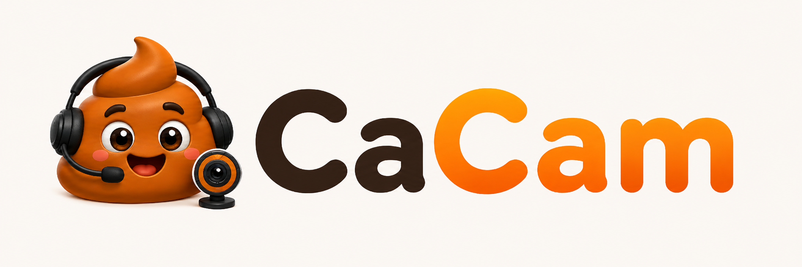

CaCam 0.9.14
Application Android avec correction de l'orientation camera pour garder l'image droite dans l'apercu, les flux MJPEG/ADB et USB BGOBS.

LeMegaGeek
Transforme un telephone Android en webcam locale pour OBS Studio, sans pilote PC ni application compagnon.
Telechargements publics
Application Android avec correction de l'orientation camera pour garder l'image droite dans l'apercu, les flux MJPEG/ADB et USB BGOBS.
Plugin OBS pour utiliser CaCam en USB BGOBS et conserver les presets BGOBS sans repasser inutilement en mode personnalise. Sous Windows, OBS peut devoir etre lance en administrateur pour acceder au peripherique USB.